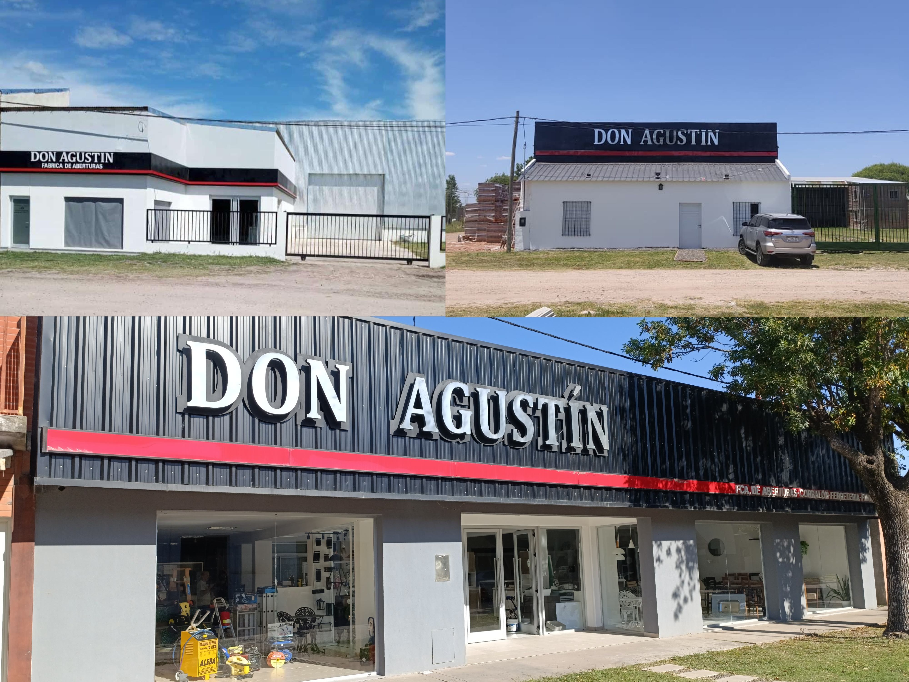

Encuentra respuestas rápidas a las consultas más comunes
El tiempo de respuesta es por orden de llegada de los mensajes. En el caso de la fábrica de aberturas, hay que recordar que puede acortar su tiempo de respuesta definiendo características de su pedido al momento de contactarnos (Ej.: línea, color, medidas, proporcionar planos arquitectónicos, etc.).
Tarjeta de débito, crédito, transferencia, Mercado Pago y otras billeteras virtuales.
Dejanos tu CV al mail de la parte de la empresa donde querés aplicar. Podés encontrar estos en la sección de "Contacto" más abajo.
Ofrece la fabricación de las aberturas, su traslado e instalación. Además del asesoramiento, presupuesto y atención post-venta sin cargo.
El envío lo realizamos por medio de transportes propios de la empresa.
Tienen un alto grado de personalización, si nuestros modelos actuales no te satisfacen, dirigí tu consulta al WhatsApp y con gusto te asesoramos.
La demora depende del propio pedido y la demanda actual. Consultar al momento de la compra.
Los colores que trabajamos son Anodizado Natural, Anodizado Negro y Anodizado Peltre.
Los colores en aluminio pintado son muy amplios y trabajamos la mayoría. Los colores más vendidos son Blanco, Negro, Gris y Símil Madera.
El envío de las mallas electrosoldadas, los perfiles, las chapas, las barras de acero, el cemento y la cal se envían a gran parte de la provincia de Entre Ríos. Siempre consultar al whatsapp.
